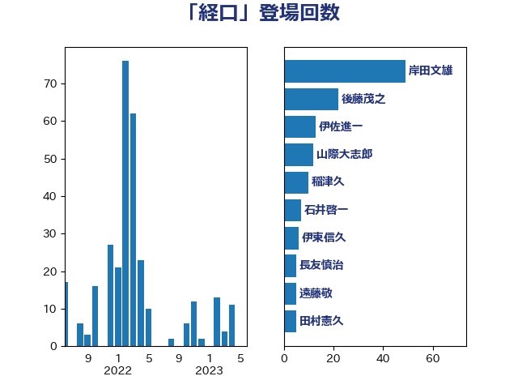

単語「経口」

| 岸田文雄 | 自由民主党 | 48 回 |
| 後藤茂之 | 自由民主党 | 22 回 |
| 伊佐進一 | 公明党 | 13 回 |
| 山際大志郎 | 自由民主党 | 12 回 |
| 田村憲久 | 自由民主党 | 11 回 |
| 稲津久 | 公明党 | 10 回 |
| 三原じゅん子 | 自由民主党 | 9 回 |
| 田村智子 | 日本共産党 | 7 回 |
| 石井啓一 | 公明党 | 7 回 |
| 川合孝典 | 国民民主党 | 6 回 |
| 勝目康 | 自由民主党 | 5 回 |
| 遠藤敬 | 日本維新の会 | 5 回 |
| 長友慎治 | 国民民主党 | 5 回 |
| こやり隆史 | 自由民主党 | 4 回 |
| 伊東信久 | 日本維新の会 | 4 回 |
| 小林茂樹 | 自由民主党 | 4 回 |
| 佐藤英道 | 公明党 | 3 回 |
| 倉林明子 | 日本共産党 | 3 回 |
| 吉田久美子 | 公明党 | 3 回 |
| 吉良よし子 | 日本共産党 | 3 回 |
| 小西洋之 | 立憲民主党 | 3 回 |
| 島村大 | 自由民主党 | 3 回 |
| 杉尾秀哉 | 立憲民主党 | 3 回 |
| 中島克仁 | 立憲民主党 | 2 回 |
| 和田有一朗 | 日本維新の会 | 2 回 |
| 坂本哲志 | 自由民主党 | 2 回 |
| 山井和則 | 立憲民主党 | 2 回 |
| 梅村聡 | 日本維新の会 | 2 回 |
| 福島みずほ | 社会民主党 | 2 回 |
| 竹内真二 | 公明党 | 2 回 |
| 蓮舫 | 立憲民主党 | 2 回 |
| 西田実仁 | 公明党 | 2 回 |
| 長谷川淳二 | 自由民主党 | 2 回 |
| 青柳陽一郎 | 立憲民主党 | 2 回 |
| 三浦信祐 | 公明党 | 1 回 |
| 中川貴元 | 自由民主党 | 1 回 |
| 仁木博文 | 無所属 | 1 回 |
| 伊東良孝 | 自由民主党 | 1 回 |
| 伊藤俊輔 | 立憲民主党 | 1 回 |
| 伊藤孝恵 | 国民民主党 | 1 回 |
| 加藤勝信 | 自由民主党 | 1 回 |
| 古川元久 | 国民民主党 | 1 回 |
| 吉田宣弘 | 公明党 | 1 回 |
| 宮本徹 | 日本共産党 | 1 回 |
| 山本博司 | 公明党 | 1 回 |
| 山添拓 | 日本共産党 | 1 回 |
| 岡本三成 | 公明党 | 1 回 |
| 打越さく良 | 立憲民主党 | 1 回 |
| 本田顕子 | 自由民主党 | 1 回 |
| 東徹 | 日本維新の会 | 1 回 |
| 松山政司 | 自由民主党 | 1 回 |
| 松本尚 | 自由民主党 | 1 回 |
| 櫻井充 | 自由民主党 | 1 回 |
| 浅野哲 | 国民民主党 | 1 回 |
| 浦野靖人 | 日本維新の会 | 1 回 |
| 片山大介 | 日本維新の会 | 1 回 |
| 田名部匡代 | 立憲民主党 | 1 回 |
| 石井章 | 日本維新の会 | 1 回 |
| 福山哲郎 | 立憲民主党 | 1 回 |
| 秋野公造 | 公明党 | 1 回 |
| 自見はなこ | 自由民主党 | 1 回 |
| 菅義偉 | 自由民主党 | 1 回 |
| 西村康稔 | 自由民主党 | 1 回 |
| 野上浩太郎 | 自由民主党 | 1 回 |
| 鈴木俊一 | 自由民主党 | 1 回 |
| 鈴木義弘 | 国民民主党 | 1 回 |